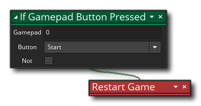

Descripción
Con esta acción puedes reiniciar el juego. Esto es similar a ejecutar el juego por primera vez, por lo que se activará el Otro - Evento de inicio del juego, así como el Otro - Evento final del juego. Sin embargo, debe tenerse en cuenta que las variables globales no se reinicializarán a menos que se codifiquen explícitamente como tales, lo que significa que si no las defines y configuras en la primera sala del juego conservarán sus valores previos, y esas estructuras de datos y las Partículas tampoco se liberarán, por lo que se debe hacer antes de que se llame a la acción Reiniciar Juego o en el Evento Final del Juego. También tenga en cuenta que el juego no se reiniciará en el momento en que se llame a esta acción, sino al final del guión o evento donde se realiza la acción, por lo que si hay acciones colocadas después de esta, todavía se llamarán y el juego reiniciado al final del bloque.
Sintaxis de acción:

Ejemplo:
El código de bloque de acción anterior verificará si el botón del gamepad está presionado y, si se detecta uno, reiniciará el juego.